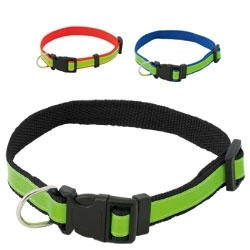

Em resumo
Escolha para tutores, equipas, instituições e eventos, separando materiais destinados às pessoas de acessórios utilizados diretamente por animais. As famílias apresentadas são possibilidades a avaliar, não artigos obrigatórios.
Contexto em imagens

Destinatários e necessidades
Tutores e famílias
Podem receber informação, materiais para transportar documentos ou acessórios ligados a uma rotina concreta. Espécie, porte e comportamento só são relevantes para adequação animal quando o objeto for efetivamente usado pelo animal.
Clínicas veterinárias, lojas e equipas de atendimento
Uma ação informativa pode precisar de materiais de consulta e de identificação da equipa. Um objeto promocional não substitui aconselhamento clínico nem demonstra benefício para a saúde.
Associações, abrigos e voluntários
Campanhas, acolhimento e ações de adoção exigem informação clara e organização. Distinga o material de participação dos equipamentos que a instituição usa nos cuidados aos animais.
Ocasiões, locais e épocas
Ação informativa
A ocasião destina-se a tutores e a equipas de atendimento e pode decorrer em contextos como ponto de atendimento ou sessão de esclarecimento. O momento — na entrega de informação revista pela equipa — ajuda a enquadrar o objetivo de permitir que a pessoa leve instruções e contactos úteis para consulta.
Campanha ou evento de associação
A ocasião destina-se a voluntários e a visitantes e pode decorrer em contextos como espaço autorizado pela organização. O momento — na receção e durante a participação — ajuda a enquadrar o objetivo de identificar funções e reunir materiais sem entregar indiscriminadamente acessórios aos animais.
Passeio ou encontro acompanhado
A ocasião destina-se a tutores e à organização e pode decorrer em contextos como ponto de encontro e percurso definido. O momento — no início ou no final da atividade — ajuda a enquadrar o objetivo de relacionar o artigo com uma rotina concreta do tutor.
Famílias de artigos a avaliar
Tutores que levam informação para casa
Objetivo
Um saco ou pasta pode reunir folhetos e documentos;
um caderno permite registar perguntas para uma consulta. A utilidade está na
organização da informação pela pessoa, não numa alegação de saúde para o animal.
Famílias a avaliar
Sacos, Pastas, Cadernos, Cartões
informativos
Equipas e participantes de campanhas
Objetivo
Peças têxteis, crachás ou fitas podem identificar
voluntários e funções de apoio. Uma mensagem curta ajuda a reconhecer o papel da
pessoa, sem prometer maior adesão à campanha.
Famílias a avaliar
Têxteis identificativos, Crachás, Fitas,
Artigos de participação
Tutores em passeios
Objetivo
Um dispensador de sacos acompanha uma tarefa
executada pelo tutor. Verifique abertura, reposição e fixação ao equipamento
utilizado; não é um brinquedo para o animal.
Famílias a avaliar
Dispensadores de sacos, Bolsas para
tutores
Animais, através de um tutor responsável
Objetivo
Coleiras, recipientes ou brinquedos precisam de
avaliação própria antes da distribuição. Separe a escolha da mensagem da
verificação de espécie, dimensões, contacto, desgaste e instruções. Não ofereça a
mesma variante a todos os animais de um evento.
Famílias a avaliar
Acessórios de identificação, Recipientes,
Brinquedos próprios para utilização documentada
Utilização e distribuição
- Na receção, identifique se o destinatário é a pessoa, a equipa ou o animal. Entregue acessórios ao tutor com as instruções.
- Em abrigos e associações, confirme as necessidades com a equipa antes de preparar conjuntos: armazenamento, limpeza e rotinas podem tornar uma oferta pouco útil.
- Mantenha os acessórios e respetivas embalagens fora do alcance dos animais até serem avaliados pelo responsável.
- Não inclua produtos de cuidado, alimentação ou primeiros socorros apenas por aparecerem numa fotografia de conjunto; o conteúdo e a utilização exigem verificação própria.
O que confirmar antes de escolher
- Para artigos humanos, confirme volume, legibilidade e facilidade de transporte; não é preciso escolher um acessório animal para comunicar sobre animais.
- Para uso direto, identifique espécie, porte, modo de utilização e instruções. Uma superfície brilhante não demonstra visibilidade certificada, nem um material com aspeto macio demonstra ausência de toxicidade.
- A orientação consultada para brinquedos de cães relaciona dimensão e tipo de boca com a escolha e recomenda observar desgaste. Não valida as fotografias desta página nem outras espécies. Fonte
Personalização e apresentação
- Em materiais informativos, coloque a mensagem da campanha junto da indicação de quem deve esclarecer dúvidas. Não transforme o texto num conselho clínico sem revisão apropriada.
- Num acessório animal, confirme com a documentação se existe uma zona e um processo permitidos para personalizar. Preserve fechos, instruções e a função do objeto. Em têxteis de equipa, avalie a técnica no tecido concreto.
Cuidados e limites
- Não declare um artigo não tóxico, resistente à mordida ou próprio para uma espécie pela aparência. A aptidão depende do artigo e da utilização real.
- Para brinquedos de cães, a ficha consultada recomenda supervisão e verificação frequente do estado; dimensão e desgaste podem alterar a utilização. Não se estendem estas orientações automaticamente a coleiras, recipientes ou a outras espécies. Fonte
- Quando houver dúvidas sobre adequação ao animal ou sobre um artigo de cuidado, procure orientação do médico veterinário antes de o disponibilizar. A oferta não deve funcionar como experiência para avaliar segurança.
Perguntas frequentes
Todos os artigos numa campanha sobre animais são para os animais?
Não. Sacos, documentos, cadernos e identificação de voluntários destinam-se normalmente às pessoas. Esta distinção deve estar clara na entrega.
Uma tigela dobrável é automaticamente adequada a alimento ou água?
Não. Forma e fotografia não demonstram composição, aptidão para o contacto previsto ou método de limpeza. Procure a documentação do artigo.
Uma coleira com faixa brilhante oferece proteção garantida?
Não. Confirme ajuste, fecho, finalidade e documentação; a imagem não quantifica visibilidade nem comprova função de proteção.